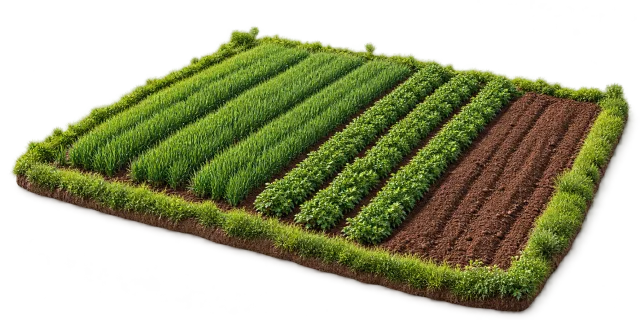
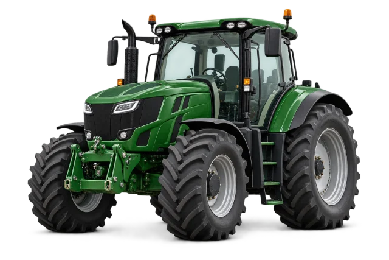

Find your farm fit.
Search by category and refine listings by location, price and the details that matter to your farm.
Discover farm essentials, find a new home for your harvest, and connect with possibilities beyond your field. A dedicated marketplace for the people who grow.

From a tractor for the next season to a new home for your harvest, explore the categories at the heart of the app.

From your first tractor to your next upgrade. Explore tractors, farm machinery and equipment in one place.
Category illustration · Explore listings in the appSearch by category and refine listings by location, price and the details that matter to your farm.
Save the listings that catch your eye and return to your collection when you’re ready to take another look.
Add photos, useful details and your location to help buyers understand what you have to offer.
Whether you’re looking for your next farm essential or making room for something new, start with what matters to you.
App availability →Browse categories and discover listings relevant to your needs.
Review photos, descriptions, asking prices and seller details.
Save your shortlist or create a listing of your own in the app.
This website introduces Kheti Badi Bazaar. Browsing marketplace listings, saving favourites and creating listings belong in the mobile app; this site does not process purchases or accept listing submissions.
Public download links will be added once the store releases are ready. Visit app availability for the current website announcement.
The app includes English, Hindi, Punjabi and Marathi language options. This introductory website is currently in English.
The images on this site are category illustrations, not live listings. Product availability, prices and seller information are shown within the app.
Discover the idea behind Kheti Badi Bazaar and where we’re headed.